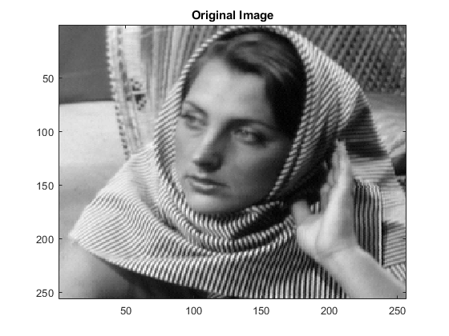
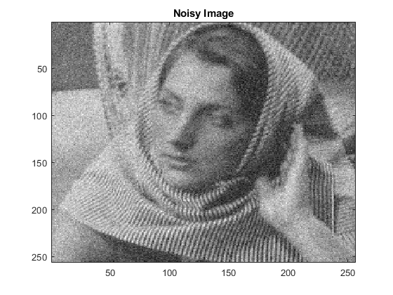
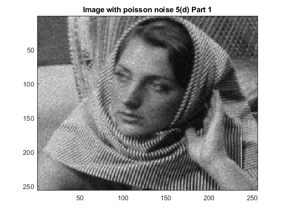
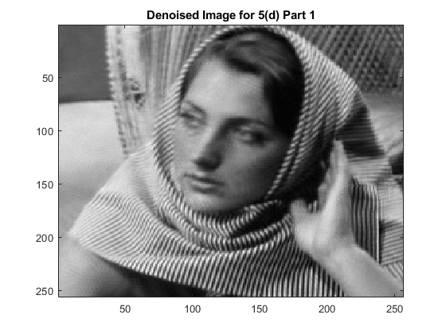
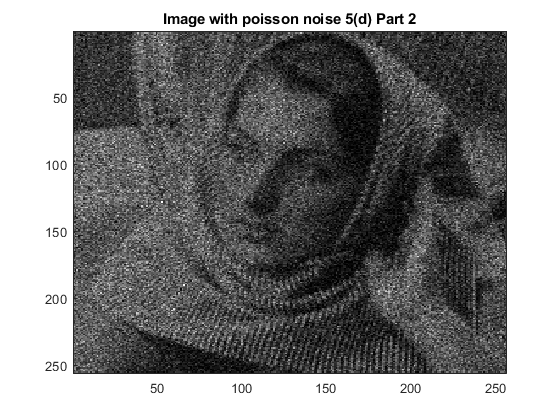

Contents
tic; I = double(imread('../data/barbara256.png')); imagesc(I);colormap(gray); title('Original Image'); s = 7; s1 = 15; sig = 20; K = 200; I1 = I + randn(size(I))*sig; rmse0 = RMSE(I,I1) figure; imagesc(I1);colormap(gray); title('Noisy Image'); % 5(a) I2 = myPCADenoising1(I1,sig,s); rmse1 = RMSE(I,I2) figure; imagesc(I2);colormap(gray); title('Image after PCADenoising1'); % 5(b) I3 = myPCADenoising2(I1,sig,s,s1,K); rmse2 = RMSE(I,I3) figure; imagesc(I3);colormap(gray); title('Image after PCADenoising2'); % 5(c) I4 = myBilateralFiltering(I1,5,33); rmse3 = RMSE(I, I4) % 5(d) sig = 0.5; % 5(d) Part 1 - Poisson noise. I_poisson = poissrnd(I); I_poisson_sqrt = sqrt(I_poisson); I5 = myPCADenoising2(I_poisson_sqrt,sig,s,s1,K); I5 = I5.^2; rmse4 = RMSE(I,I5) figure; imagesc(I_poisson);colormap(gray); title('Image with poisson noise 5(d) Part 1'); figure; imagesc(I5);colormap(gray); title('Denoised Image for 5(d) Part 1'); % 5(d) Part 2 - Poisson noise simulating low exposure. I_poisson2 = poissrnd(I/20); I_poisson2_sqrt = sqrt(I_poisson2); I6 = myPCADenoising2(I_poisson2_sqrt,sig,s,s1,K); I6 = I6.^2; rmse5 = RMSE(I/20,I6) figure; imagesc(I_poisson2);colormap(gray); title('Image with poisson noise 5(d) Part 2'); figure; imagesc(I6);colormap(gray); title('Denoised Image for 5(d) Part 2'); toc;
rmse0 =
0.0214
rmse1 =
0.0052
rmse2 =
0.0032
rmse3 =
0.0089
rmse4 =
0.0014
rmse5 =
0.0142
Elapsed time is 167.275541 seconds.
     Explanation for 5(c):
PCA based denoising seems to work better (RMSE = 0.0032) than Bilateral Filtering (RMSE = 0.0090). This is because PCA filters include the estimate of signal-to-noise ratio while changing the eigen-coefficients. PCA based denoising act primarily on eigencoefficients having low signal-to-noise ratio like in the Wiener Filter update. Where, in the case of Bilateral Filtering, it directly applies a (product of two)gaussian kernel(s) of the spatial and intensity domains and no where takes into account these signal-to-noise ratios for denoising.
Explanation for 5(d):
In the latter case when we applied a poisson noise to a low exposure image (im/20), the SNR (signal-to-noise) ratio becomes very high. The noise is almost comparable to the corresponding pixel values. Hence, because of this, it is difficult for PCA Denoising to effectively remove the noise, thus we see a high RMSE [0.0141] with original (im/20) than in the case when the same procedure is done directly on original image (im) (not divided by 20) where RMSE observed was [0.0014].